CameraMaster¶
CameraMaster User Manual
The CameraMaster (software GUI) interacts directly with the MIG-S2 Grabber to control camera modules, configure serializers/deserializers, and capture image in real-time.
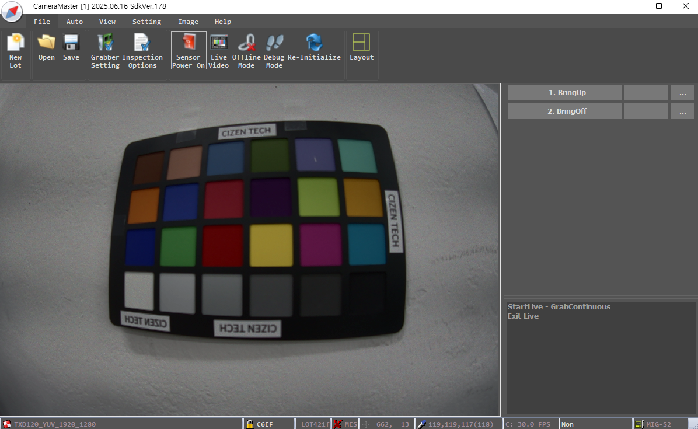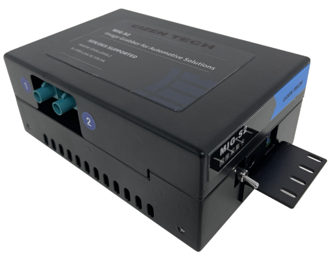
Table of Contents
System Overview
Configuration File Structure
2.1 Grabber Configuration
2.2 Power Configuration
2.3 Deserializer Configuration
2.4 Serializer Configuration
2.5 Image Sensor / ISP Configuration
Module Bring-up Procedure
3.1 Required Information
3.2 Bring-up Test Using CameraMaster
Offline Test Mode
4.1 Test Procedure
Additional Menu Functions
Grabber Terminal Usage
6.1 Setting I2C Address
6.2 Writing I2C Data
6.3 Reading I2C Data
Image Kit Content
SFR
Distortion
Defect
Stain (Blemish)
Optical Center
Shading (Vignetting)
Fixed Pattern Noise
Uniformity
Driver Installation
Appendix & Notes
1. System Overview
CameraMaster operates through a following data flow.
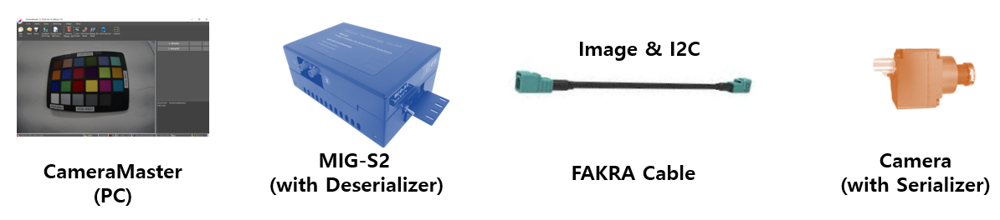
Configuration Data Flow (for settings):
CameraMaster(PC USB) → S2 Board (I2C) → Deserializer (GMSL) → FAKRA Cable → Serializer (I2C) → Camera Module (I2C)Video Signal Flow (for image data):
Camera Module (MIPI) → Serializer (GMSL) → FAKRA Cable → Deserializer (MIPI) → S2 Board(USB) → CameraMaster(PC)
2. Configuration File Structure
CameraMaster utilizes .ini files to configure sensor modules.
2.1 Grabber Configuration
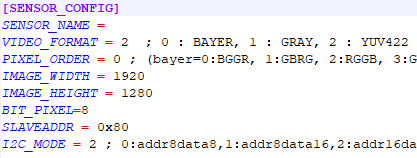Image Format
Image Size
Default i2c format
Etc.
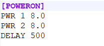2.2 Power Configuration
Module Power Configuration
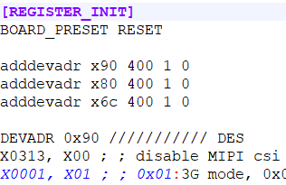2.3 Deserializer Configuration
GMSL Link Speed Configuration
Output MIPI Lane Configuration
Etc.
2.4 Serializer Configuration
GMSL Link Speed Configuration
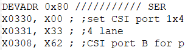Input data type Configuration
Output GPIO Configuration
Etc.

2.5 Image Sensor / ISP Configuration
Initial register settings for streaming.
Etc.
3. Module Bring-up Procedure
3.1 Required Information
case 1. Image Sensor and SER initial is downloaded during module boot up
case 2. Image Sensor and SER initial is setup by host i2c command
Required Information |
case 1 (boot) |
case 2 (host) |
|---|---|---|
Image Format |
O |
O |
Image Resolution |
O |
O |
Image Sensor initial setting |
X |
O |
Serializer setting |
X |
O |
De-serializer setting |
O |
O |
PoC Power Voltage |
O |
O |
Bring-up Test Using CameraMaster
Select configuration file
View configuration file contents
Power ON camera module
View live video
Initialize sensor
Power OFF
Currently selected configuration file name
Monitor frame status
Monitor Grabber board connection
Monitor I2C logs
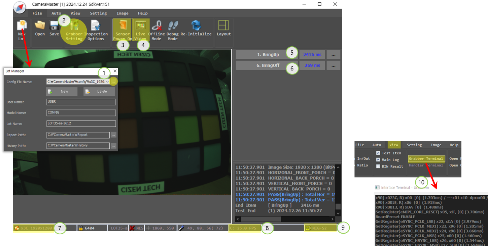
4. Offline Test Mode
4.1 Test Procedure
Select configuration(ini) file
Load image file
Save image file
Open ini in Notepad
Open Inspection Option window
Set Offline test mode (test without capturing)
Proceed Test item.
Open the Inspection Options Settings window for the corresponding item.
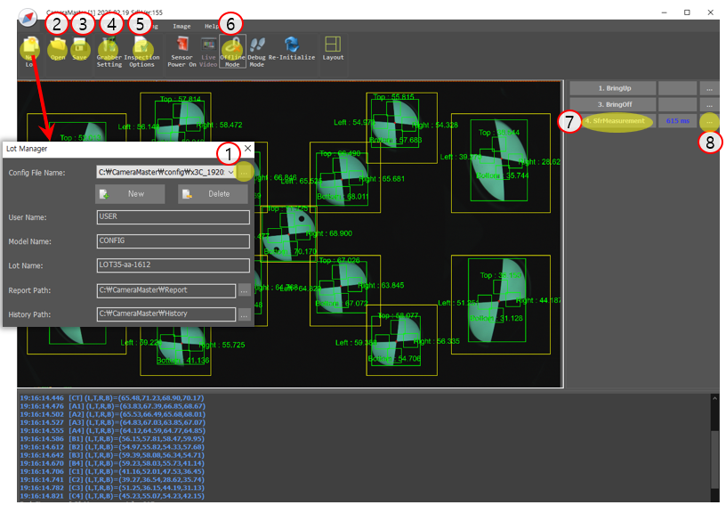
5. Additional Menu Functions
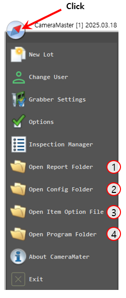Open report directory
Open settings path
Open item option file
Access program folder
6. Grabber Terminal Usage
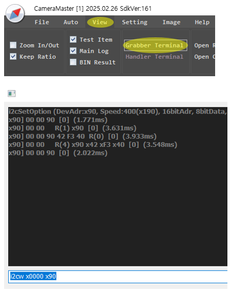6.1 Setting I2C Address
devadr x90 400 1 1
// Slave Address: x90
// I2C Speed: 400kHz
// 16-bit Register Address: Enabled
// 16-bit Register Data: Enabled
6.2 Writing I2C Data
x0000 x90
// Write value x90 to register x0000
6.3 Reading I2C Data
i2cr x0000
// Read 1 byte from x0000
i2cr x0000 4
// Read 4 bytes from x0000
7. Image Kit Content
CameraMaster have a solution for camera module inspection.
SFR
 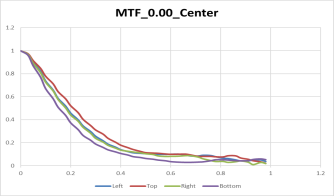 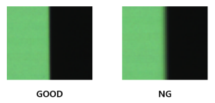
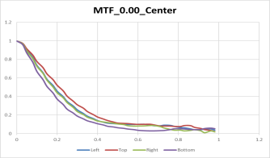 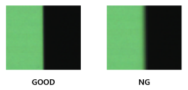- Tested according to ISO-12233:2023 standard
- Measuring resolution with chart image including edges
Distortion
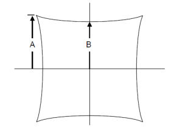
- Check the ratio of A and B using the SMIA standard inspection method
Defect


- This occurs when there is a defect in the sensor’s pixels or foreign matter on the sensor surface.
- Perform tests in bright or dark environments
Stain (Blemish)
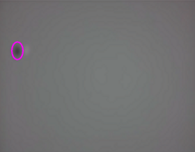
- Defects due to foreign matter such as dust on the lens or between the lens and the image sensor
Optical Center
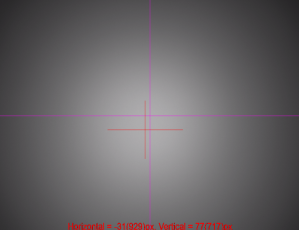
- Determine the location of the brightest area in the image and check how far it deviates from the center of the image.
Shading (Vignetting)
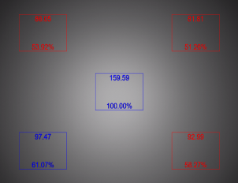
- Test is conducted by comparing the difference in brightness between the central and peripheral areas.
Fixed Pattern Noise

- This occurs because the pixel characteristics of the image sensor are not completely uniform.
- Perform tests in bright or dark environments
Uniformity
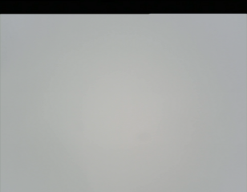
- Check the uniformity of the image by measuring the standard deviation of the image.
8. Driver Installation
Install the MIG_Driver_win10_x64 package:
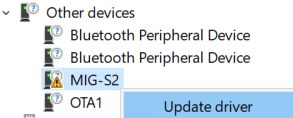
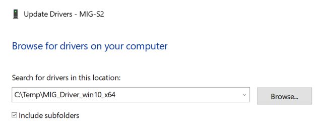 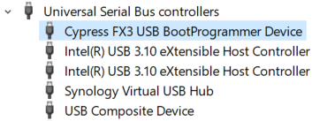
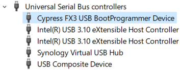
9. Appendix & Notes
2025-06-23
Initial release
CIZEN TECH Co., Ltd.
507, 8 Sanbon-ro 324beon-gil, Gunpo-si, Gyeonggi-do, Republic of Korea
contact@cizentech.com
http://cizentech.com/
Disclaimer and Copyright Notice
Information in this document, including URL references, is subject to change without notice.
No permission is granted to use for purpose anything but descriptions in this document. Disorderly binding and page missing shall be replaced into a correct documentation